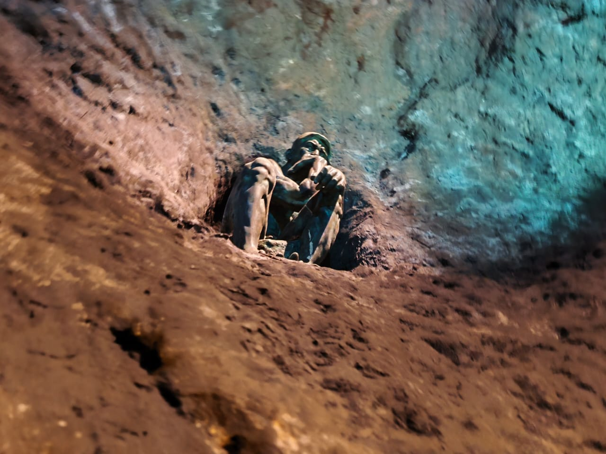

El Infierno de Dante es una de las salas temáticas del recorrido del Anfiteatro de Villa. Inspirado en La Divina Comedia de Dante Alighieri, presenta una travesía simbólica a través de los pecados humanos y sus consecuencias. Este infierno se divide en nueve círculos, cada uno destinado a un tipo específico de falta. Entre sombras, criaturas fantásticas y tormentos eternos, se plantea una reflexión sobre la justicia divina, la moral y las decisiones del alma.
El Limbo
Personas virtuosas sin bautismo ni fe cristiana. No sufren físicamente, pero viven alejados de Dios, envueltos en nostalgia eterna. Representa la pérdida de la gracia por causas ajenas a la voluntad.
Lujuria
Quienes se dejaron dominar por los deseos carnales. Son arrastrados por vientos sin fin. El viento simboliza el deseo incontrolable que arrasa con la razón.
Gula
Aquellos que vivieron en exceso. Yacen entre lodo bajo lluvia pestilente, atormentados por Cerbero. Refleja cómo el placer sin medida degrada la naturaleza humana.
Avaricia
Personas que acumularon bienes sin compartir o derrocharon sin control. Empujan pesos en direcciones opuestas, colisionando sin cesar. Representa la lucha inútil entre el deseo de poseer y el impulso de malgastar.
Ira
Los coléricos se agreden entre sí en la superficie del río Estigia. Los apáticos y melancólicos están sumergidos en silencio. El agua turbia simboliza la confusión interior causada por no gestionar las emociones.
Herejía
Quienes negaron doctrinas esenciales de la fe. Descansan en tumbas ardientes. Las llamas limpian la negación, y las tumbas abiertas representan la falsa calma de ideas erradas.
Violencia
Este círculo alberga a quienes ejercieron violencia contra otros, contra sí mismos o contra lo sagrado. Sufren tormentos como ríos de sangre, cuerpos transformados en árboles desgarrados, o caminar bajo lluvia de fuego. Cada castigo refleja el dolor causado por esas formas de violencia.
Fraude
Aquellos que engañaron con palabras, apariencias o manipulaciones. Cada grupo sufre penas simbólicas como fuego, enfermedades, animales o oscuridad. El fraude destruye la confianza humana y corrompe la verdad.
Traición
Personas que traicionaron vínculos esenciales como familia, patria o benefactores. Quedan atrapadas en un lago helado. En el centro, Lucifer devora a los traidores más infames. El hielo simboliza la ausencia total de amor o humanidad.
Cada círculo refleja un vicio y su consecuencia. Dante no pretendía infundir miedo, sino despertar conciencia. Sus castigos no son arbitrarios, sino metáforas visuales del daño que los actos humanos provocan.
